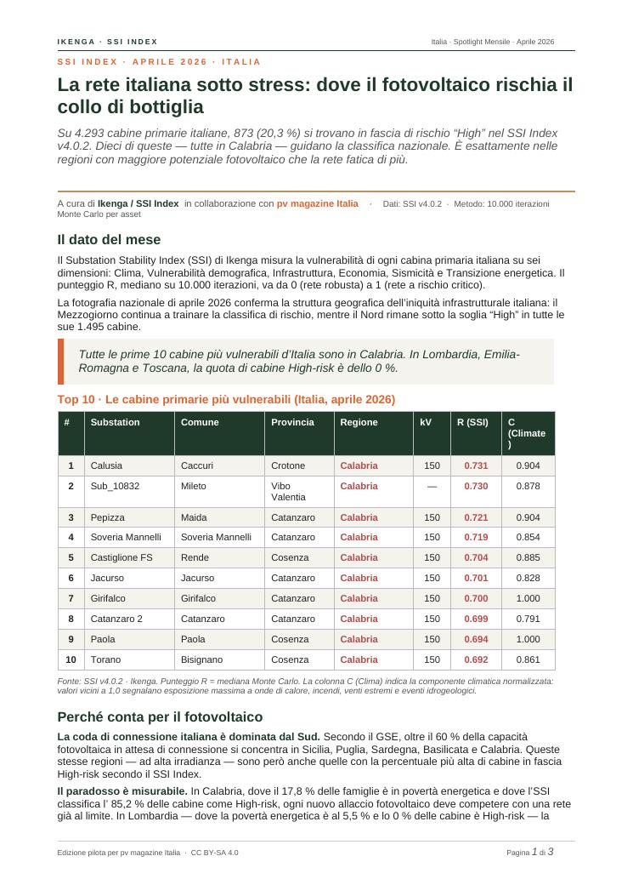
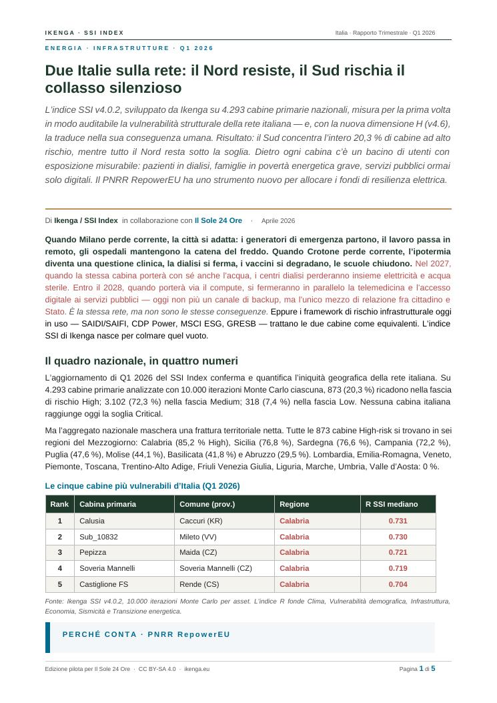
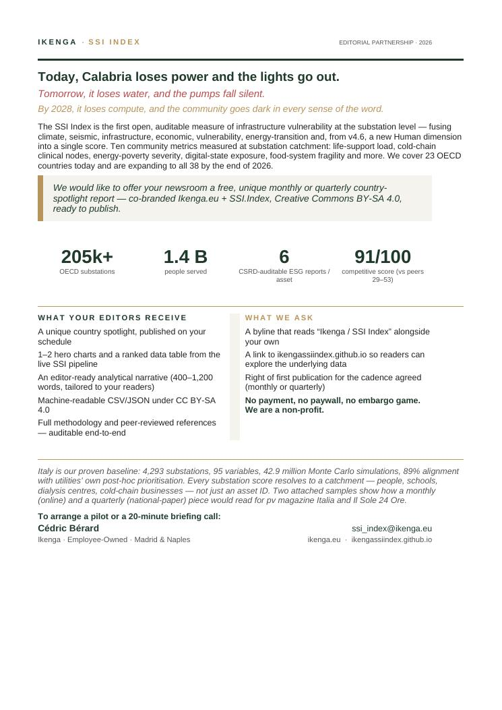

Une proposition sur mesure pour Euractiv France.
Un rapport gratuit, mensuel ou trimestriel, co-signé Ikenga + SSI.Index, construit sur les données des 4 293 postes sources italiens — pensé pour les lectrices et lecteurs de Euractiv France.
L’SSI Index est la première mesure ouverte et auditable de la vulnérabilité des postes sources à l’échelle de l’OCDE. Il fusionne climat, sismicité, infrastructure, économie, démographie, transition énergétique — et, depuis la v4.6, une nouvelle dimension Humaine (H) qui traduit le score en conséquence concrète pour la communauté : patients sous dialyse à domicile, précarité énergétique profonde, services publics désormais 100 % numériques.
Résultat : chaque poste source a un nom, une commune, un bassin d’usagers. Sa fragilité devient une information vérifiable, non plus une abstraction.
Les deux formats — à vous de choisir la cadence
Mensuel ou trimestriel : les deux formats sont ci-dessous. Prenez celui qui convient à votre calendrier éditorial, ou nous en discutons ensemble lors de l’échange.


Le teaser d’une page

Pour qui veut la vue d’ensemble

20 minutes, quand vous voulez
Un appel bref pour discuter de la cadence — mensuelle ou trimestrielle — et de la manière d’intégrer les données SSI à votre ligne éditoriale. Sans engagement ; si le moment n’est pas bon, dites-le nous simplement.
Réserver un échange →